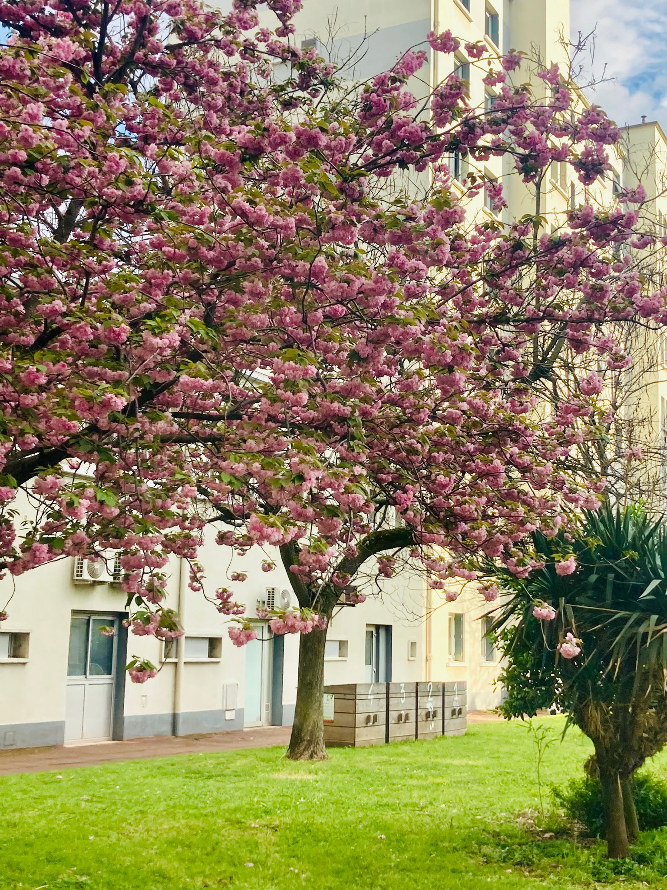

Bienvenue sur : Compostage Le Villon
Information Importante :
Réouverture du Bac n°1 de broyat !!!
N'hésitez pas à nous contacter via le formulaire de contact pour plus d'informations.

Retrouvez sur notre site toutes les informations utiles liées à nos bacs de compostage.